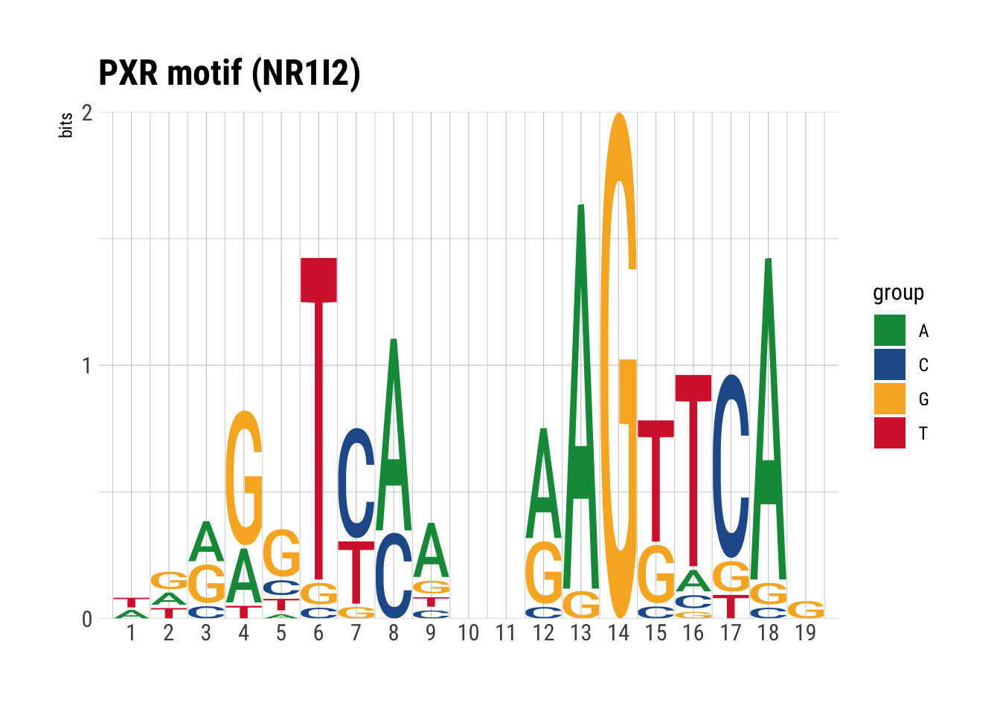

Q7: PRX sequences
Dominique Paul
2022-07-07
Last updated: 2022-07-07
Checks: 7 0
Knit directory: GR-PROTAC-analysis/analysis/
This reproducible R Markdown analysis was created with workflowr (version 1.7.0). The Checks tab describes the reproducibility checks that were applied when the results were created. The Past versions tab lists the development history.
Great! Since the R Markdown file has been committed to the Git repository, you know the exact version of the code that produced these results.
Great job! The global environment was empty. Objects defined in the global environment can affect the analysis in your R Markdown file in unknown ways. For reproduciblity it’s best to always run the code in an empty environment.
The command set.seed(20220515) was run prior to running the code in the R Markdown file. Setting a seed ensures that any results that rely on randomness, e.g. subsampling or permutations, are reproducible.
Great job! Recording the operating system, R version, and package versions is critical for reproducibility.
Nice! There were no cached chunks for this analysis, so you can be confident that you successfully produced the results during this run.
Great job! Using relative paths to the files within your workflowr project makes it easier to run your code on other machines.
Great! You are using Git for version control. Tracking code development and connecting the code version to the results is critical for reproducibility.
The results in this page were generated with repository version 779ceb2. See the Past versions tab to see a history of the changes made to the R Markdown and HTML files.
Note that you need to be careful to ensure that all relevant files for the analysis have been committed to Git prior to generating the results (you can use wflow_publish or wflow_git_commit). workflowr only checks the R Markdown file, but you know if there are other scripts or data files that it depends on. Below is the status of the Git repository when the results were generated:
Ignored files:
Ignored: .DS_Store
Ignored: analysis/.DS_Store
Ignored: analysis/.Rhistory
Ignored: analysis/docs/.DS_Store
Ignored: data/.DS_Store
Ignored: data/EOS_files/
Ignored: data/reddy_bigwig_DEX12h_r123.bigWig
Ignored: data/reddy_bigwig_DEX2h_r123.bigWig
Ignored: data/reddy_bigwig_DEX6h_r123.bigWig
Ignored: data/reddy_bigwig_JUNB_DEX12h_r123.bigWig
Untracked files:
Untracked: analysis/08-Differential_binding.Rmd
Untracked: data/reddy_bed_DEX6h_r123.bed.gz
Untracked: data/results/SE.processed.rds
Untracked: data/single_replicate_peaks/
Unstaged changes:
Modified: analysis/01_download_files.Rmd
Modified: analysis/02_exploratory_analysis.Rmd
Modified: analysis/Q1-Gene-overlap.Rmd
Modified: analysis/Q2-TF-Binding-to-DE-genes.Rmd
Modified: analysis/Q4-GR-binding-PROTAC-genes.Rmd
Modified: analysis/admin.Rmd
Modified: output/Q2_GR_bound_DE_genes.xlsx
Modified: output/Q4_KH_DE_GR_bound.xlsx
Note that any generated files, e.g. HTML, png, CSS, etc., are not included in this status report because it is ok for generated content to have uncommitted changes.
These are the previous versions of the repository in which changes were made to the R Markdown (analysis/Q7-PRX-sequences.Rmd) and HTML (docs/Q7-PRX-sequences.html) files. If you’ve configured a remote Git repository (see ?wflow_git_remote), click on the hyperlinks in the table below to view the files as they were in that past version.
| File | Version | Author | Date | Message |
|---|---|---|---|---|
| Rmd | dd2072e | dominique-paul-uzh | 2022-06-22 | added remaining questions |
| html | dd2072e | dominique-paul-uzh | 2022-06-22 | added remaining questions |
| Rmd | 207afa6 | dominique-paul-uzh | 2022-06-21 | added question 3 |
Question 7: Does GC-GR bind to PRX sequences?
Approach
Q7: Scan open areas (ATAC-seq) for PXR binding (NR1I2). How many of those are bound by GR?
- Scan for PRX sequences.
- Is there an overlap between the peaks of GR and the PRX sequences?
# ah <- AnnotationHub()
# gr_peaks <- import.bed15("../data/reddy_bed_DEX12h_r123.bed", format="narrowPeak")
# ensdb <- ah[["AH98047"]]
# gr_peaks_annotated <- annotateRegions(gr_peaks, ensdb)
gr_peaks <- readRDS("../data/EOS_files/Q2_annotated_peaks.rds")
# change from chr (ensembl format) to just numbers
# seqlevels(peaks)<- sub('chr','',seqlevels(peaks))peak_centers <- resize(gr_peaks, fix="center", width=100)
# we get the genome sequence from a download from the UCSC, human genome wasnt found in search in annotation hub
genome <- BSgenome::getBSgenome("BSgenome.Hsapiens.UCSC.hg38", masked=FALSE, load.only=FALSE)
# we get the sequences corresponding to the peak centers:
peak_seqs <- memes::get_sequence(peak_centers, genome)
peak_seqsDNAStringSet object of length 7920:
width seq names
[1] 100 TCCTTCAGACGTCTGCCTACAG...GACCTGTGCAAGCACAAGGGA chr2:6186891-6186990
[2] 100 GTTTATCACTATCTCCCACACC...GTCATAGGCTGATTTCAAAAT chr2:8004379-8004478
[3] 100 CTGCCTGGAATTCAACTAGAAC...ATACGTGCTGAAAATGCATAC chr2:8121144-8121243
[4] 100 AAACTAAGAATCAGAGCACTCA...GGAGAGTTTATAGCGCAGAAT chr2:8306813-8306912
[5] 100 AAAGAGTGATTCATTCTGGTAT...CATGATATGTTTGCCCTGGCT chr2:8307101-8307200
... ... ...
[7916] 100 ATGAACACACCCTGTATGACAA...ACGGCTTTGGCTTTGATGTCA chr18:75490029-75...
[7917] 100 ATAGCTGCTGCTATAGCTGGCG...ACATTCCTTTGGAAGCTTAGA chr18:75923351-75...
[7918] 100 GGCATTTATCCCAGAGAAATGA...AACCAAAACCTGGAAATAATC chr18:77128033-77...
[7919] 100 TCAAGTCTTTGTCATGGAGACC...AGTGTGCACATGTACAGACTG chr18:77560743-77...
[7920] 100 TTTAAATGAAACGGTGAGATGC...TATCGGGAAGCGTTACGTAAG chr18:79791689-79...Get the motif for PXR (NR1I2)
# we search for "CTCF" in the motif database
motifs <- query(MotifDb, "NR1I2")
# there are several matching motifs:
names(motifs)[1] "Hsapiens-HOCOMOCOv10-NR1I2_HUMAN.H10MO.C"
[2] "Hsapiens-HOCOMOCOv10-NR1I2_HUMAN.H10MO.S"
[3] "Mmusculus-HOCOMOCOv10-NR1I2_MOUSE.H10MO.C"
[4] "Mmusculus-HOCOMOCOv10-NR1I2_MOUSE.H10MO.S"
[5] "Hsapiens-HOCOMOCOv11-core-C-NR1I2_HUMAN.H11MO.0.C"
[6] "Hsapiens-HOCOMOCOv11-secondary-D-NR1I2_HUMAN.H11MO.1.D"
[7] "Hsapiens-SwissRegulon-NR1I2.SwissRegulon" # we select one:
motif <- motifs[["Hsapiens-HOCOMOCOv11-core-C-NR1I2_HUMAN.H11MO.0.C"]]
# we visualize it:
plt_motif <- view_motifs(motif) +
labs(title="PXR motif (NR1I2)") +
theme_ipsum_rc()
plt_motif
| Version | Author | Date |
|---|---|---|
| dd2072e | dominique-paul-uzh | 2022-06-22 |
ggsave(file="../docs/assets/Q7_1_motif.png", plt_motif)Saving 7 x 5 in imageHow many of the GR peaks contain a PRX motif?
# you might eventually need to add the meme_path argument:
moi <- memes::runFimo(peak_seqs, convert_motifs(motif), meme_path = "/Users/dominiquepaul/.meme/bin")
moiGRanges object with 238 ranges and 6 metadata columns:
seqnames ranges strand | motif_id motif_alt_id score
<Rle> <IRanges> <Rle> | <character> <character> <numeric>
[1] chr2 20539448-20539466 - | motif <NA> 10.6867
[2] chr2 23746090-23746108 + | motif <NA> 10.6145
[3] chr2 28597627-28597645 - | motif <NA> 11.9277
[4] chr2 30511241-30511259 - | motif <NA> 11.7952
[5] chr2 33153152-33153170 - | motif <NA> 12.2048
... ... ... ... . ... ... ...
[234] chr18 8730468-8730486 + | motif <NA> 10.9880
[235] chr18 9905762-9905780 - | motif <NA> 15.8193
[236] chr18 21439884-21439902 + | motif <NA> 11.9398
[237] chr18 32383241-32383259 + | motif <NA> 14.0482
[238] chr18 58362551-58362569 + | motif <NA> 10.7229
pvalue qvalue matched_sequence
<numeric> <numeric> <character>
[1] 6.80e-05 NA GGAGCTCCTGGAAGCACAG
[2] 7.07e-05 NA AAGGCTTCCTTGAGGTTAG
[3] 3.39e-05 NA TGAGGTGCACAGAGGTTAA
[4] 3.66e-05 NA TCAGATCACTTGAGGTCAG
[5] 2.87e-05 NA AGAGCCCAAAAAAGTACAA
... ... ... ...
[234] 5.78e-05 NA GATAGTTAATAAAGGCCAG
[235] 2.18e-06 NA AGAGGGTAGAAAAGTTCAC
[236] 3.37e-05 NA TTAGCTGATTAAAGTACAG
[237] 8.58e-06 NA AGATATCAGAAAAGTTCAC
[238] 6.67e-05 NA TTAGTTCCTATGGGGTCAT
-------
seqinfo: 22 sequences from an unspecified genome; no seqlengthscat(paste0("We have ", length(peak_seqs), " GR peaks, of which ", length(moi), " (", round(length(moi)/length(peak_seqs),4)*100, "%) contain a PRX motif"))We have 7920 GR peaks, of which 238 (3.01%) contain a PRX motifsaveRDS(moi, file="../data/EOS_files/pxr_peaks.rds")What do the signal tracks look like around the PRX motifs found in the accessible DNA?
# Subset for open ATAC-seq data
atac_peaks <- import.bed15("../data/reddy_bed_ATAC_control.bed.gz", format="narrowPeak")
atac_centers <- resize(atac_peaks, fix="center", width=100)
# we get the sequences corresponding to the peak centers:
atac_peak_seqs <- memes::get_sequence(atac_centers, genome)
# Subset for PXR motifs
pxr_in_atac <- memes::runFimo(atac_peak_seqs, convert_motifs(motif), meme_path = "/Users/dominiquepaul/.meme/bin")
pxr_in_atacGRanges object with 4510 ranges and 6 metadata columns:
seqnames ranges strand | motif_id motif_alt_id
<Rle> <IRanges> <Rle> | <character> <character>
[1] chr1 100299915-100299933 + | motif <NA>
[2] chr1 10459401-10459419 - | motif <NA>
[3] chr1 10459401-10459419 - | motif <NA>
[4] chr1 107572804-107572822 - | motif <NA>
[5] chr1 109838955-109838973 - | motif <NA>
... ... ... ... . ... ...
[4506] chrX 9141669-9141687 - | motif <NA>
[4507] chrY 10660340-10660358 - | motif <NA>
[4508] chrY 17817551-17817569 + | motif <NA>
[4509] chrY 17817551-17817569 + | motif <NA>
[4510] chrY 17817551-17817569 + | motif <NA>
score pvalue qvalue matched_sequence
<numeric> <numeric> <numeric> <character>
[1] 10.19280 8.81e-05 NA TACTGTCAAGGGAGCACAG
[2] 14.68670 5.37e-06 NA AGGGGGTATAAAAGGTCAT
[3] 14.68670 5.37e-06 NA AGGGGGTATAAAAGGTCAT
[4] 9.98795 9.77e-05 NA AATTGTCCAACAAGGTGAC
[5] 11.71080 3.85e-05 NA CAAGGTGAGAAGAGTTGAA
... ... ... ... ...
[4506] 12.4096 2.53e-05 NA GGAATTCCATGGAGGTGAT
[4507] 11.7108 3.85e-05 NA GGAGTTGATTGAAGTTGAG
[4508] 10.5783 7.21e-05 NA TAAGTTCATGTGAGCTTAC
[4509] 10.5783 7.21e-05 NA TAAGTTCATGTGAGCTTAC
[4510] 10.5783 7.21e-05 NA TAAGTTCATGTGAGCTTAC
-------
seqinfo: 24 sequences from an unspecified genome; no seqlengths# Plot signal tracks
## Load bigwig data
tracks <- list(#"2h-DEX"="../data/reddy_bigwig_DEX2h_r123.bigWig",
"12h-DEX"="../data/reddy_bigwig_DEX12h_r123.bigWig")
motifs_plt <- pxr_in_atac[pxr_in_atac$score > 15]
# configure the chromosome names to not include the "chr"
# seqlevels(motifs_plt) <- stringr::str_replace(seqlevels(motifs_plt), "chr", "")
# error occurs here
signals <- signal2Matrix(tracks, motifs_plt, w=5, extend=500)Reading ../data/reddy_bigwig_DEX12h_r123.bigWigplt_signal <- ggplotify::as.ggplot(grid::grid.grabExpr(ComplexHeatmap::draw(plotEnrichedHeatmaps(signals)))) +
theme_ipsum_rc() +
labs(title="Signal tracks for PXR motifs found in accessible DNA",
x="", y="") +
theme(axis.title.x=element_blank(),
axis.text.x=element_blank(),
axis.ticks.x=element_blank(),
axis.title.y=element_blank(),
axis.text.y=element_blank(),
axis.ticks.y=element_blank())
plt_signal
| Version | Author | Date |
|---|---|---|
| dd2072e | dominique-paul-uzh | 2022-06-22 |
ggsave(file="../docs/assets/Q7_2_signal.png", plt_signal, width=8, height=8)
sessionInfo()R version 4.1.0 (2021-05-18)
Platform: x86_64-apple-darwin17.0 (64-bit)
Running under: macOS Big Sur 10.16
Matrix products: default
BLAS: /Library/Frameworks/R.framework/Versions/4.1/Resources/lib/libRblas.dylib
LAPACK: /Library/Frameworks/R.framework/Versions/4.1/Resources/lib/libRlapack.dylib
locale:
[1] en_US.UTF-8/en_US.UTF-8/en_US.UTF-8/C/en_US.UTF-8/en_US.UTF-8
attached base packages:
[1] grid stats4 stats graphics grDevices utils datasets
[8] methods base
other attached packages:
[1] BSgenome.Hsapiens.UCSC.hg38_1.4.4 hrbrthemes_0.8.6
[3] universalmotif_1.12.4 BSgenome_1.62.0
[5] ggplot2_3.3.6 MotifDb_1.36.0
[7] AnnotationHub_3.2.2 BiocFileCache_2.2.1
[9] dbplyr_2.2.1 Biostrings_2.62.0
[11] XVector_0.34.0 memes_1.2.5
[13] epiwraps_0.99.42 EnrichedHeatmap_1.24.0
[15] ComplexHeatmap_2.10.0 rtracklayer_1.54.0
[17] GenomicRanges_1.46.1 GenomeInfoDb_1.30.1
[19] IRanges_2.28.0 S4Vectors_0.32.4
[21] BiocGenerics_0.40.0
loaded via a namespace (and not attached):
[1] utf8_1.2.2 R.utils_2.12.0
[3] tidyselect_1.1.2 RSQLite_2.2.14
[5] AnnotationDbi_1.56.2 htmlwidgets_1.5.4
[7] BiocParallel_1.28.3 munsell_0.5.0
[9] ragg_1.2.2 codetools_0.2-18
[11] interp_1.1-2 withr_2.5.0
[13] colorspace_2.0-3 Biobase_2.54.0
[15] filelock_1.0.2 highr_0.9
[17] knitr_1.39 rstudioapi_0.13
[19] Rttf2pt1_1.3.10 labeling_0.4.2
[21] MatrixGenerics_1.6.0 git2r_0.30.1
[23] GenomeInfoDbData_1.2.7 farver_2.1.1
[25] bit64_4.0.5 rprojroot_2.0.3
[27] vctrs_0.4.1 generics_0.1.3
[29] xfun_0.31 biovizBase_1.42.0
[31] ggseqlogo_0.1 R6_2.5.1
[33] doParallel_1.0.17 splitstackshape_1.4.8
[35] clue_0.3-61 locfit_1.5-9.5
[37] AnnotationFilter_1.18.0 gridGraphics_0.5-1
[39] bitops_1.0-7 cachem_1.0.6
[41] DelayedArray_0.20.0 assertthat_0.2.1
[43] vroom_1.5.7 promises_1.2.0.1
[45] BiocIO_1.4.0 scales_1.2.0
[47] nnet_7.3-17 gtable_0.3.0
[49] processx_3.6.1 ensembldb_2.18.4
[51] workflowr_1.7.0 rlang_1.0.3
[53] systemfonts_1.0.4 GlobalOptions_0.1.2
[55] splines_4.1.0 extrafontdb_1.0
[57] lazyeval_0.2.2 dichromat_2.0-0.1
[59] checkmate_2.1.0 BiocManager_1.30.18
[61] yaml_2.3.5 GenomicFeatures_1.46.5
[63] backports_1.4.1 httpuv_1.6.5
[65] Hmisc_4.7-0 extrafont_0.18
[67] tools_4.1.0 ggplotify_0.1.0
[69] ellipsis_0.3.2 jquerylib_0.1.4
[71] RColorBrewer_1.1-3 Rcpp_1.0.8.3
[73] plyr_1.8.7 base64enc_0.1-3
[75] progress_1.2.2 zlibbioc_1.40.0
[77] purrr_0.3.4 RCurl_1.98-1.7
[79] ps_1.7.1 prettyunits_1.1.1
[81] rpart_4.1.16 deldir_1.0-6
[83] GetoptLong_1.0.5 cowplot_1.1.1
[85] GenomicFiles_1.30.0 SummarizedExperiment_1.24.0
[87] cluster_2.1.3 fs_1.5.2
[89] magrittr_2.0.3 magick_2.7.3
[91] data.table_1.14.2 circlize_0.4.15
[93] whisker_0.4 ProtGenerics_1.26.0
[95] matrixStats_0.62.0 pkgload_1.3.0
[97] hms_1.1.1 mime_0.12
[99] evaluate_0.15 xtable_1.8-4
[101] XML_3.99-0.10 jpeg_0.1-9
[103] gridExtra_2.3 shape_1.4.6
[105] testthat_3.1.4 compiler_4.1.0
[107] biomaRt_2.50.3 tibble_3.1.7
[109] crayon_1.5.1 R.oo_1.25.0
[111] htmltools_0.5.2 later_1.3.0
[113] tzdb_0.3.0 Formula_1.2-4
[115] tidyr_1.2.0 DBI_1.1.3
[117] MASS_7.3-57 rappdirs_0.3.3
[119] Matrix_1.4-1 readr_2.1.2
[121] brio_1.1.3 cli_3.3.0
[123] R.methodsS3_1.8.2 parallel_4.1.0
[125] Gviz_1.38.4 pkgconfig_2.0.3
[127] GenomicAlignments_1.30.0 foreign_0.8-82
[129] xml2_1.3.3 foreach_1.5.2
[131] bslib_0.3.1 yulab.utils_0.0.5
[133] stringr_1.4.0 VariantAnnotation_1.40.0
[135] digest_0.6.29 rmarkdown_2.14
[137] htmlTable_2.4.0 edgeR_3.36.0
[139] gdtools_0.2.4 restfulr_0.0.15
[141] curl_4.3.2 shiny_1.7.1
[143] Rsamtools_2.10.0 rjson_0.2.21
[145] lifecycle_1.0.1 jsonlite_1.8.0
[147] desc_1.4.1 viridisLite_0.4.0
[149] limma_3.50.3 fansi_1.0.3
[151] pillar_1.7.0 lattice_0.20-45
[153] KEGGREST_1.34.0 fastmap_1.1.0
[155] httr_1.4.3 survival_3.3-1
[157] interactiveDisplayBase_1.32.0 glue_1.6.2
[159] UpSetR_1.4.0 png_0.1-7
[161] iterators_1.0.14 cmdfun_1.0.2
[163] BiocVersion_3.14.0 bit_4.0.4
[165] stringi_1.7.6 sass_0.4.1
[167] blob_1.2.3 textshaping_0.3.6
[169] latticeExtra_0.6-30 memoise_2.0.1
[171] dplyr_1.0.9